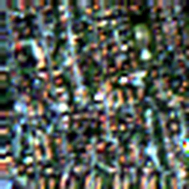

01 / HIGHEST RECALL◉
Sea / Lake
The strongest recognized class.
10 land-cover classes. 13 spectral bands. One fine-tuned ResNet-50 learning to recognize the patterns below.

EUROSAT · RESIDENTIALCan a pretrained image model recognize those patterns when every image has thirteen spectral channels instead of three?
Satellite scenes contain information about agriculture, forests, water, industry, and settlement. Automatically labeling these regions can support large-scale environmental monitoring and land-cover analysis.
We adapted an ImageNet-pretrained ResNet-50 to process the 13-band EuroSAT dataset, then trained a custom classifier using progressive fine-tuning. We evaluated it on the test split and examined which land types it confuses.
Explore the EuroSAT datasetCan a model trained to recognize everyday objects learn to read the planet from space?
A familiar convolutional backbone with two deliberate changes: more input channels and a purpose-built classification head.
EuroSAT multispectral TIFF
13 × H × WRGB-informed 13-band Conv2d
64 filters · 7 × 7ImageNet-pretrained backbone
2,048 featuresLinear + ReLU layers
2048 → 256 → 64 → 10We replaced ResNet-50's original 3-channel convolution with a new 13-channel layer and replaced its final classification layer with an identity mapping. The remaining pretrained residual backbone feeds a three-layer head.
In the latest notebook, the 13-channel convolution is initialized using pretrained RGB filters for the visible bands and a scaled mean filter for the other bands. It is then trained on multispectral data.
From dense forests to highways, EuroSAT provides ten scene categories for a 10-way classification task.
Select a class, then switch between three actual image samples. The previews map Sentinel-2 B04/B03/B02 to red, green and blue with a per-image 2–98 percentile contrast stretch; they are display representations, not the full 13-channel model inputs.
All 30 images were exported from the uploaded EuroSAT 13-band TIFF test split. Each gallery card has its source filename in the image viewer. Colors are enhanced separately for each scene and should not be interpreted as calibrated true-color reflectance.
See how accuracy improved across five rounds of fine-tuning. Each shaded section marks a new learning rate; the marker shows the lowest recorded validation loss.
Warm-up: 12 epochs at a learning rate of 1 × 10⁻³, with the residual backbone frozen and the adapted input convolution trainable. Then all parameters were unfrozen for five lower-rate stages.
A closer look at how the model performed on 2,759 test images.
Correct predictions across all test samples
Equal contribution from every class
Test predictions represented below
Stratified dummy classifier, same test split
True class on each row, predicted class on each column. Select any cell to inspect the mistake or correct classification.
The strongest recognized class.
The most common incorrect class pairing.
The category with the most room to improve.
We re-tested the 96.56% checkpoint after rotating, flipping, brightening, darkening, and adding noise to the same held-out test images. The standout change is resilience to Gaussian noise.
Adding Gaussian noise at σ = 0.2 (in the normalized input space) barely changes the new model’s predictions: accuracy drops just 1.16 percentage points from its clean baseline.
The new checkpoint is loaded from Model State Archives/96.6%Acc.pth. Right-angle rotations and flips remain strong; 30° and 45° rotations are challenging and may introduce artificial blank corners. These are transformation stress tests, not independent test datasets.
Percentage of each actual class correctly identified. This highlights weaknesses that a single accuracy figure can hide.
The project demonstrates effective transfer learning from everyday imagery to multispectral remote sensing, while the confusion matrix shows exactly where broader context and additional evaluation could help.
Back to the topWater-body scenes are especially well distinguished: 357 of 359 SeaLake samples in the new test were correctly classified.
Pasture has the lowest recall (91.0%), with Highway (92.0%) and Permanent Crop (92.4%) also leaving room for improvement.
The new model holds 95.40% accuracy under Gaussian noise. Next: understand its greater sensitivity to 30° and 45° rotations.
The evaluation and robustness results come from ResNetModel(7).ipynb, which loads Model State Archives/96.6%Acc.pth: 96.56% clean test accuracy, 0.1289 loss, 2,759 test images. The confusion matrix represents 2,664 correct predictions; macro F1 is calculated from the matrix. The 52 fine-tuning epochs were reconstructed from the copied first 20 epoch logs plus 32 preserved notebook output epochs; epoch 31 records the lowest validation loss (0.1280). The 12 frozen warm-up epochs have no preserved per-epoch metrics. Gaussian-noise values are from separate randomized perturbation runs using the same nominal σ = 0.2, so small differences across reruns are expected. RGB gallery tiles illustrate labeled scenes, not scored individual predictions.